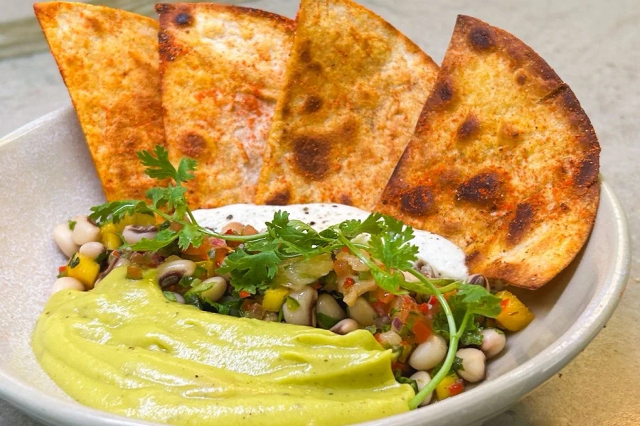
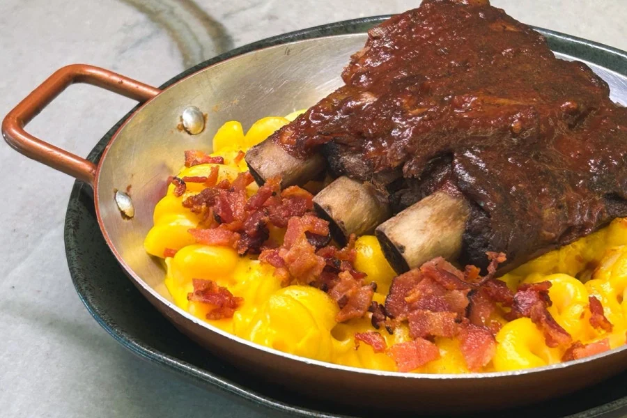
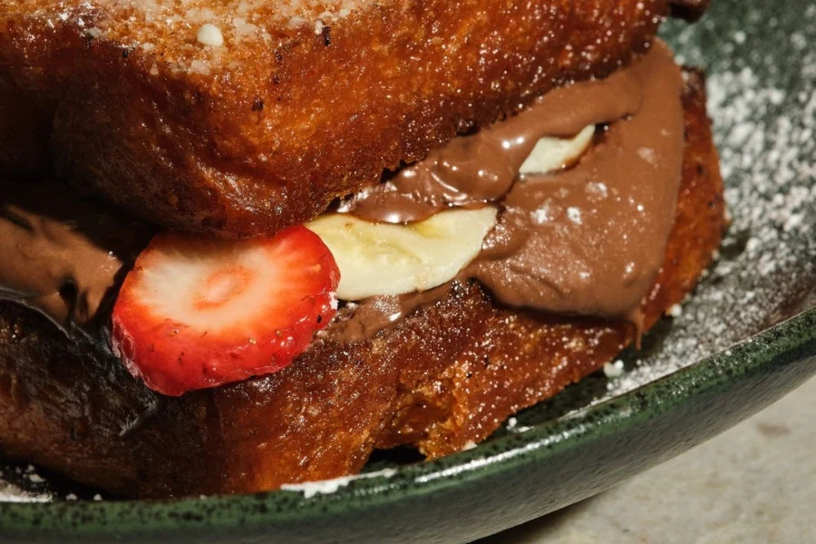
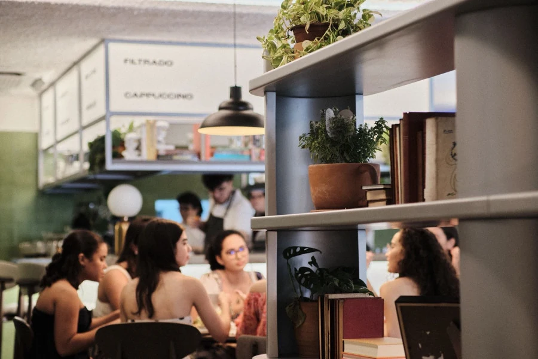

Avocado
Creme de abacate e ovos.
Meireles, Fortaleza
O café da manhã pode ir além da manhã. Aqui, a mesa recebe toasts, pratos para o almoço e uma pausa doce no meio do dia.


Você escolhe o ritmo. Nosso cardápio reúne brunch, lanches e pratos para almoçar, para pedir conforme a fome e o momento da visita.
Abra o menu para conhecer as opções, os acompanhamentos e os valores da casa.
Ver opções do menuAlém dos toasts, preparamos pratos para uma refeição completa. A cozinha acompanha a sua vontade de ficar mais um pouco.
Do encontro no café à mesa de almoço, encontre a sua escolha no nosso cardápio.


Chocolate, frutas e café também fazem parte da nossa mesa. Escolha um doce para dividir ou transforme a pausa da tarde no seu pedido principal.
Acompanhar nossas novidadesNosso endereço no Meireles tem salão interno, mesas ao ar livre e espaço para compartilhar a mesa. Recebemos pets e contamos com ambiente climatizado.

Você pode reservar pelo nosso canal de reservas. Escolha a data e o horário disponíveis para o salão interno.
Escolher data da reservaPara feriados e datas especiais, fale com a gente.
Nosso canal de reservas permite escolher data e horário para o salão interno. Para outras mesas ou grupos, fale conosco pelo WhatsApp.
Nossa proposta é brunch ao longo do dia. Também temos lanches, doces e pratos para o almoço; o cardápio reúne as escolhas da casa.
Recebemos pets. Ao planejar a visita, converse com a equipe para escolher a mesa mais adequada.
Nosso cardápio digital traz as opções e seus valores. Se tiver alguma restrição alimentar, informe antes de fazer o pedido.